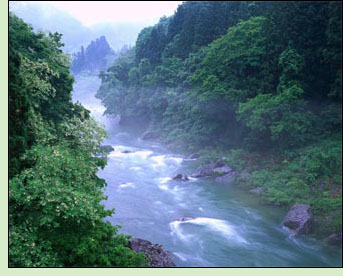

Audio Recordings
 The following dharma talks and meditation instructions were recorded by Paul Linn at various retreats and sitting groups. Click the link to begin streaming the audio file or, to save the file, right-click and choose the appropriate option from the menu that appears.
3-day Silent Retreat, September 28-30, 2012, Tampa
Beingness Is Abundance
(day 2)
5-day Silent Retreat, November 28 - December 2, 2011, Tampa
Non-interferring Unfoldment
(day 1)
Everything In Its Place
(day 3)
7-day Residential Retreat, November 2019
“Respect for the Dharma”
, November 10, LENGTH 1:04
“When the Hindrances No Longer Hinder”
, November 12, LENGTH 1:03
“Merit, Wisdom and the Preciousness of Life” (Steve Bean)
, November 13, LENGTH 1:08
“In the Kula Forest Reserve”
, November 14, LENGTH 1:30
3-day Residential Retreat, October 2015
“Trust”
, Friday evening, October 30, LENGTH 1:26:57
“Seeing Thru That Which Sees”
, Saturday evening, October 31, LENGTH 1:25:16
3-day Residential Retreat, March 2015
“A Precious Human Life”
, Saturday evening, March 14, LENGTH 1:20:15
3-day Residential Retreat, March 2014
“What Is Most Critical”
, Saturday evening, March 22, LENGTH 1:39:27
3-day Residential Retreat, October 2013
“The Myth of Individuality”
, Friday evening, October 18, LENGTH 1:11:15
“Seeing Clearly and Seeing Through”
, Saturday evening, October 19, LENGTH 1:20:34
1-day Residential Retreat, March 2013, Tampa
Original Nature
, LENGTH 1:15:32
5-day Residential Retreat, November-December 2012, Tampa
Teaching of Rememberance
, LENGTH 1:25:00
Why Are You Unhappy?
, LENGTH 1:07:00
What Truly Matters
, LENGTH 1:19:00
Loving Freedom
, LENGTH 1:19:00
3-day Residential Retreat, September 2012, Tampa
The Dharma Gates
, LENGTH 1:26:00
5-day Residential Retreat, March 14-18, 2012, Tampa
MEDITATIVE AWARENESS
, Wednesday evening, March 14, LENGTH 1:28:00
A CONDITION OF ALIENATION
, Thursday evening, March 15, LENGTH 1:05:002012, March 15
RECOGNIZING FREEDOM
, Friday evening, March 16, LENGTH 1:30:00
WHAT'S A GOOD QUESTION?
, Saturday evening, March 17, LENGTH 0:50:00
Nothing to Get
, May 23, 2018 (1:28:16)
Wisdom Yields Natural Joy
, May 2, 2018 (1:15:35)
From Distracted Tendency to Simplicity of Truth
, April 25, 2018 (1:10:29)
Divinely Human – Chandra
, February 14, 2018 (1:25:21)
Quick Overview of Classical Buddhism
, February 7, 2018 (1:26:44)
The Potential For Gratitude
, October 26, 2016 (1:14:36)
The Seven Factors Of Awakening
, October 12, 2016 (1:18:34)
Clear Comprehension
, September 21, 2016 (52:32)
Not A Parallel Universe
, September 14, 2016 (1:11:07)
Being Awake Is Being Free
, September 7, 2016 (1:26:11)
The Dissolution Of The Apparent Sense Of Self
, August 31, 2016 (1:18:57)
The Notion Of Progression
, September 28, 2016 (1:18:55)
The Trance Of Your Story
, August 10, 2016 (43:27)
What Are Conditions Offering
, August 3, 2016 (85:25)
What Can't Be Named
, October 9, 2013 (46:13)
Meditative Awareness II
, October 2, 2013 (51:51)
Meditative Awareness I
, September 25, 2013 (47:31)
Discovering Non-Disturbance
, September 18, 2013 (47:21)
In and Out of Concepts
, August 21, 2013 (49:30)
Parents Are First Teachers
, January 39, 2013 (37:59)
The Means Are The End
, October 17, 2012 (32:18)
What's Happening in Meditation?
, March 30, 2011 (55:55)
Separation and Self-Concept
, March 16, 2011 (38:18)
Awakened Nature
, March 2, 2011 (36:44)
Freedom
, February 2, 2011 (25:10)
On Complete Allowance (or Not)
, January 19, 2011 (48:55)
Openness without View
, January 12, 2011 (37:41)
|